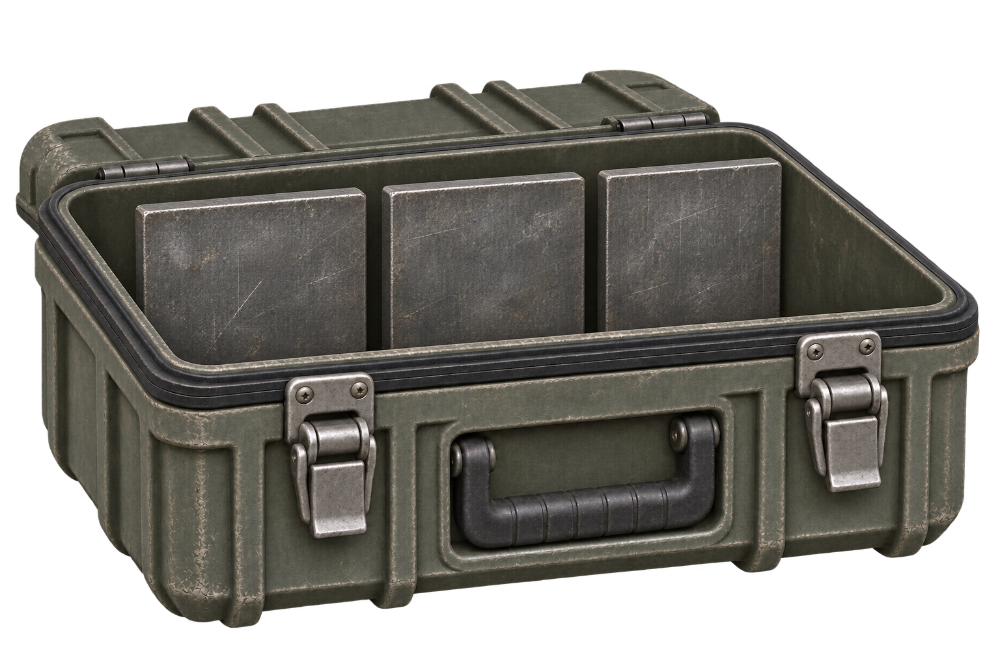
Accessoire · 1 image statique
Renforts — coffret garni de trois plaques
engineering-case-stocked
1536 × 1024 · RGBA · 2,368,689 octets
SHA-256 f1a5d5f9f592d08d1be6b4b77c9a4ba52856e8ae09de2131356d3908c9b24cad
Ouvrir le PNG originalOnze nouveaux PNG, huit accessoires adaptés aux supports du jeu et trois vues de sentinelle. Le catalogue cumulé contient 141 images ; les 130 précédentes restent inchangées.

engineering-case-stocked
1536 × 1024 · RGBA · 2,368,689 octets
SHA-256 f1a5d5f9f592d08d1be6b4b77c9a4ba52856e8ae09de2131356d3908c9b24cad
Ouvrir le PNG original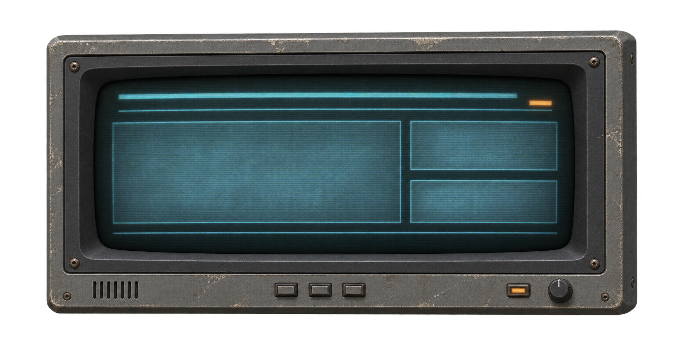
gateway-inquiry-display
1774 × 887 · RGBA · 2,362,728 octets
SHA-256 0736d478db9c2cf2bbc54702b3725cb2edb589605332c611da14cde701a1b05c
Ouvrir le PNG original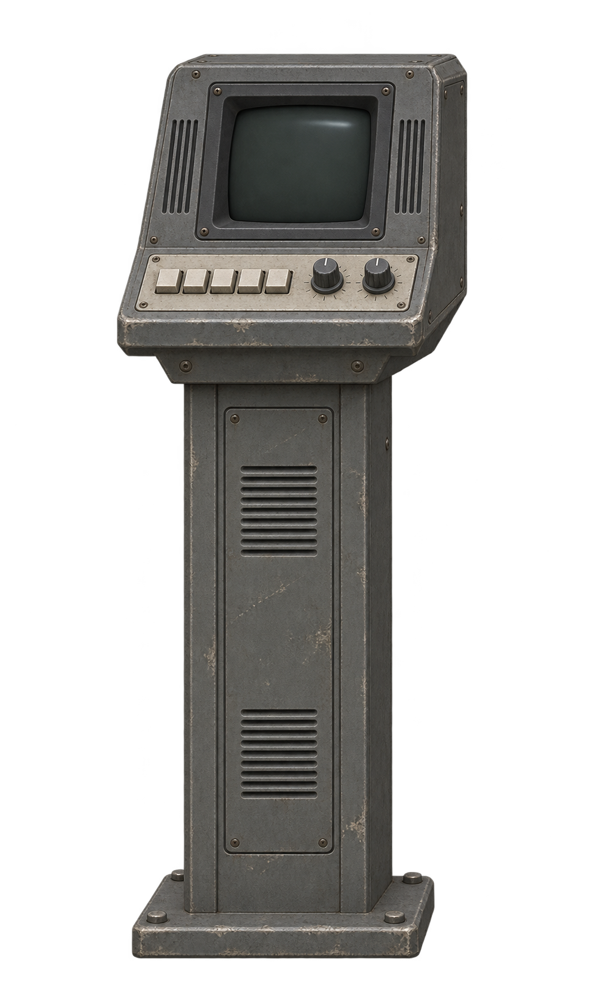
service-control-pedestal
963 × 1633 · RGBA · 1,276,428 octets
SHA-256 1b0be7132e27f1d2829bee04ade31a41cd4a7d1d5cc4e77828bf6cb7e4d4a3b5
Ouvrir le PNG original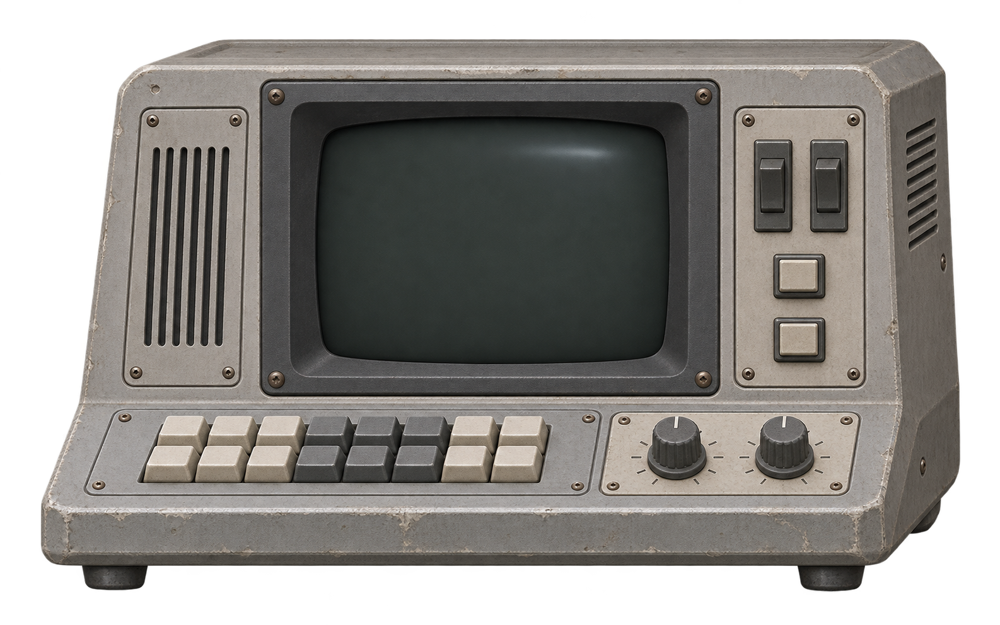
medical-counter-terminal
1586 × 992 · RGBA · 2,389,765 octets
SHA-256 524b3fddf9c01be30949e9d51413d50ddeb1baa9ee6b4095595bf3aa72776864
Ouvrir le PNG original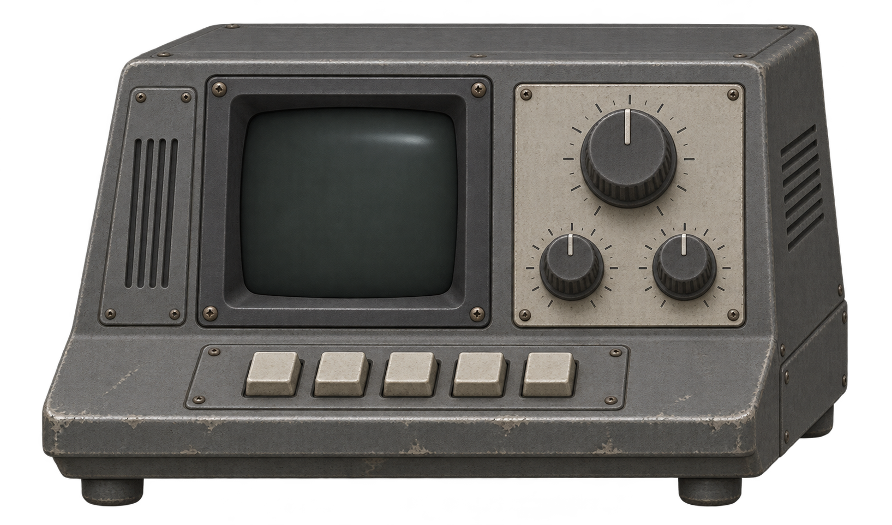
optics-calibration-terminal
1635 × 962 · RGBA · 2,325,558 octets
SHA-256 d4e18e908131198f0e501ed70a2a741b782a036b3e8c935b5e037432220c40a3
Ouvrir le PNG original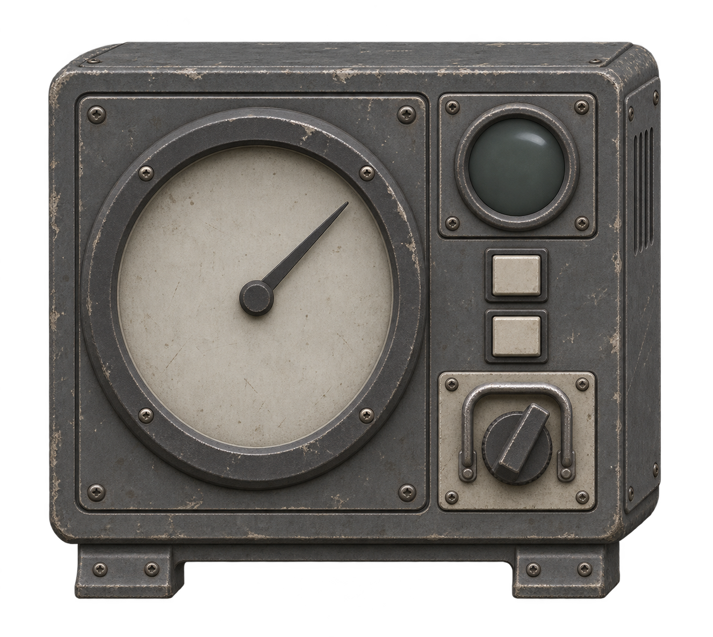
valve-indicator-panel
1327 × 1186 · RGBA · 2,386,174 octets
SHA-256 ec62b3d888dbcc81e7e8550cfdb15f76a5eda230c706e151bba4db7f74a35b2d
Ouvrir le PNG original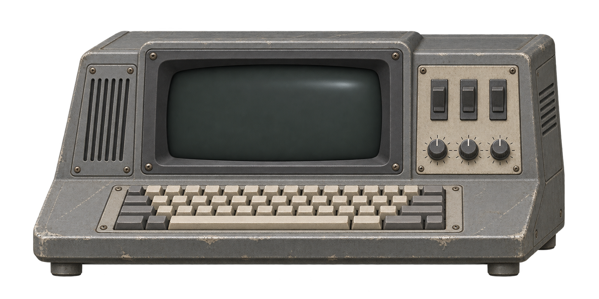
sulaco-briefing-terminal
1774 × 887 · RGBA · 2,043,852 octets
SHA-256 0e08e812b8e85452ff30bb448483f966159088e728dca1cd3216488ddc1c1555
Ouvrir le PNG original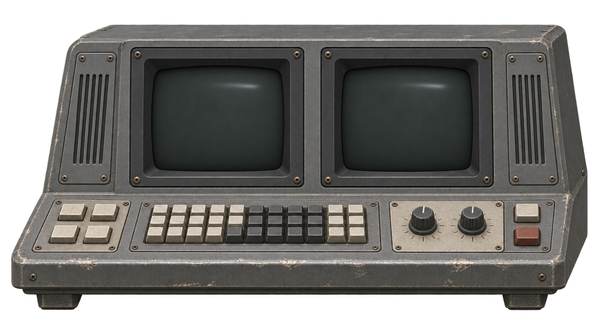
operations-table-terminal
1706 × 922 · RGBA · 2,280,782 octets
SHA-256 50adeba42a58b714a5048fc93556f2fa6708eb6a8f792c19c1d1d862a0cd868f
Ouvrir le PNG original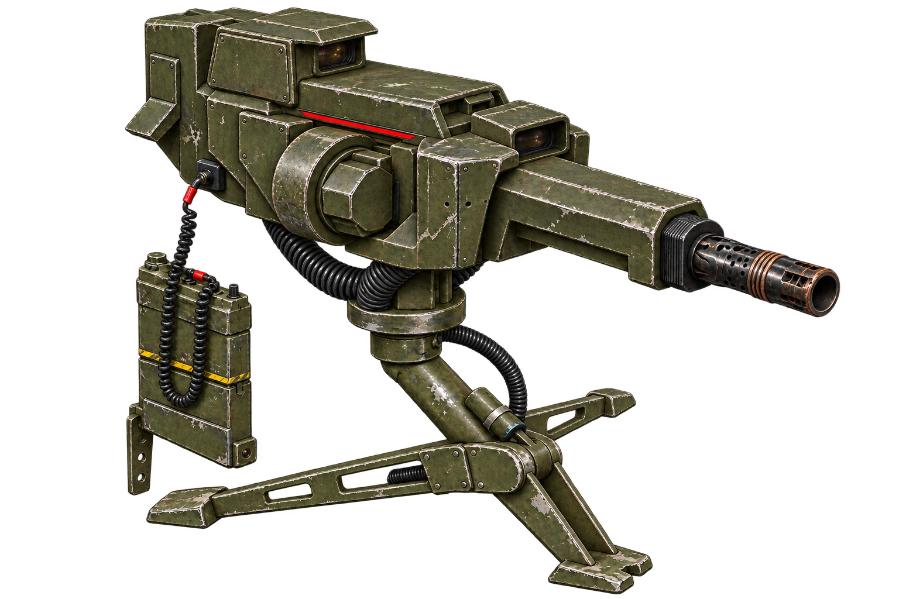
sentry-aim-front-right
1536 × 1024 · RGBA · 2,117,622 octets
SHA-256 967f67f1dd0416c0ca227e27642c136ede0e1cca4ee798e3fa9f8c46a032408b
Ouvrir le PNG original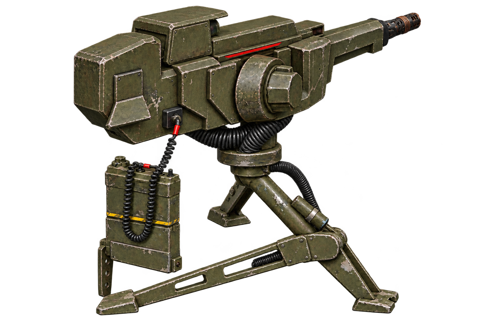
sentry-aim-rear-right
1536 × 1024 · RGBA · 2,090,613 octets
SHA-256 ec994d07af32863311577b72628b0794fafc96a06653aa045f020d5305e60b9c
Ouvrir le PNG original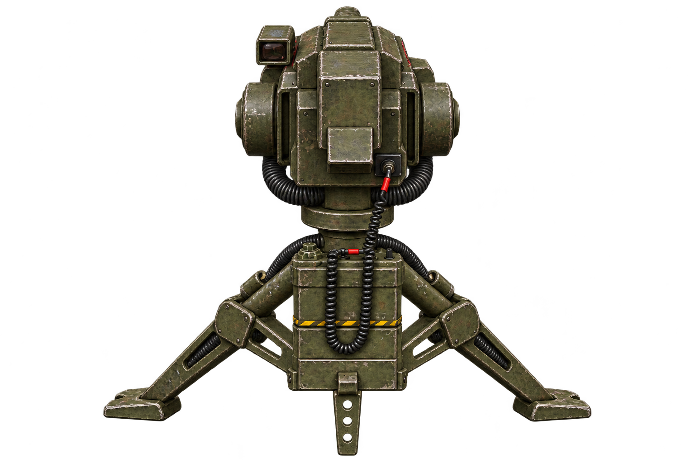
sentry-aim-rear
1536 × 1024 · RGBA · 1,786,024 octets
SHA-256 6ddcd2bd2bc99d2471a49e49e7ea851efa97010ca70e59e7003a5f10b77375b9
Ouvrir le PNG original